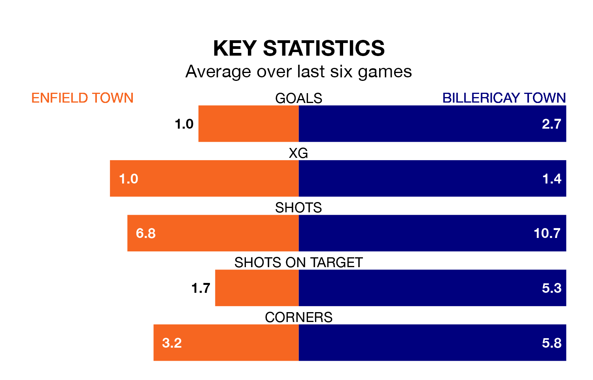

Billericay Town travel to the Queen Elizabeth Stadium for Tuesday's late match against Enfield Town looking to bounce back from defeat last time out in Isthmian Premier Division.
Billericay, who sit third in the league after 25 games, fell to a 1-0 away defeat to Bognor Regis Town on Saturday.
They face an Enfield side who also lost their last match, a 2-1 defeat to AFC Hornchurch, and who sit fourth in the table.
With 50 goals in 26 games so far this season, Enfield are the league's third-highest scorers with 1.9 goals per game. And they are conceding at an average rate, letting in 41 goals at a rate of 1.6 per game.
Billericay are also above average scorers, with 1.7 goals per game, compared to a league average of 1.6. They have conceded 0.8 goals per game.
In the last 10 years, Enfield and Billericay have played each other on 14 occasions. Enfield won six of them, Billericay three, and they drew five times.
On average, Enfield scored 1.9 goals and Billericay 1.4 in those matches.
Their last meeting was on October 24, when they played out a 1-1 draw.
Enfield Town are in disappointing form in Isthmian Premier Division, with one win and two draws from their last six games.
With four wins and a draw over that period, Billericay Town's form is much better – they have taken 13 points from 18, compared to the home team's five.
Updated: 09:21 (UTC), 30/01/24